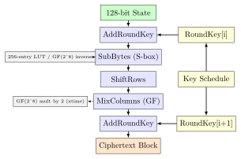
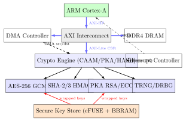

Chapter 18: Hardware Cryptographic Accelerators¶
Note: Hardware cryptographic accelerators achieve 10x–1000x better performance-per-watt compared to software implementations. A Cortex-M4 running AES-128-CBC in software achieves approximately 50 Mbps at 168 MHz; the same SoC with AES hardware acceleration (e.g., STM32F4 CRYP peripheral) achieves 1.4 Gbps – a 28x improvement. At the SoC level, Intel QAT 8970 delivers 100 Gbps symmetric crypto on a PCIe card.
18.1 AES Hardware Acceleration¶
AES (Advanced Encryption Standard, FIPS 197) is the most widely hardware-accelerated cipher. Four implementation strategies exist:
18.1.1 CPU ISA Extensions¶
Intel AES-NI (x86): Introduced in Westmere (2010). Six instructions:
-
AESENC xmm1, xmm2/m128: One round of AES encryption (SubBytes, ShiftRows, MixColumns, AddRoundKey). -
AESENCLAST xmm1, xmm2/m128: Final round (no MixColumns). -
AESDEC / AESDECLAST: Corresponding decryption rounds (using InvSubBytes, InvShiftRows, InvMixColumns). -
AESIMC xmm1, xmm2/m128: InvMixColumns for key schedule expansion (decryption). -
AESKEYGENASSIST xmm1, xmm2/m128, imm8: Assists key schedule: RotWord, SubWord, Rcon XOR.
AES-NI throughput on Ice Lake: 0.62 cycles/byte for AES-128-GCM with CLMUL. Pipeline depth: 4 cycles latency per AESENC, but 4-way pipelining achieves 1 clock per round. AES-256-GCM throughput: approximately 1.2 cycles/byte.
ARM AES intrinsics (ARMv8-A Cryptography Extensions, FEAT_AES): Introduced in Cortex-A53/A57. Four NEON/Advanced SIMD instructions:
-
AESE Vd.16B, Vn.16B: AddRoundKey + SubBytes + ShiftRows. -
AESMC Vd.16B, Vn.16B: MixColumns. -
AESD / AESIMC: Corresponding decryption operations.
ARM Cortex-A72 AES-128-GCM throughput: approximately 0.58 cycles/byte at 1.5 GHz = 2.5 Gbps. Apple M2 using FEAT_AES + PMULL: approximately 0.21 cycles/byte for AES-256-GCM.
RISC-V Zkn (NIST Cryptography, Ratified 2022): The Zkn extension provides:
-
aes32esi / aes32esmi: AES forward SubBytes + ShiftRows, with/without MixColumns (RV32 only). -
aes64es / aes64esm: RV64 versions processing two AES state columns per instruction. -
aes64im: InvMixColumns for RV64. -
aes64ks1i / aes64ks2: Key schedule instructions for RV64.
SiFive P870 with Zkn: 3.4 Gbps AES-128-GCM at 1.7 GHz. SiFive P670: 2.1 Gbps.
SHA-NI (x86 SHA Extensions, Intel Goldmont 2016): Two new instruction sets:
-
SHA256RNDS2, SHA256MSG1, SHA256MSG2: SHA-256 round and message schedule.
-
SHA1RNDS4, SHA1NEXTE, SHA1MSG1, SHA1MSG2: SHA-1 (legacy use only).
SHA-256 throughput with SHA-NI: 3.65 cycles/byte (vs 12.8 cycles/byte software on same core, 3.5x speedup).
18.1.2 AES Round Function Hardware Pipeline¶

Hardware S-box implementations:
-
LUT (Look-up Table): 256-byte ROM, 1 cycle, 2048 gates.
-
Composite field GF((2^4)^2): Tower field arithmetic, 170 gates, no ROM needed, power-balanced (better for side-channel resistance).
-
Masked S-box: Randomized affine transform + inverse, 600–800 gates, suitable for DPA-resistant implementations.
18.2 Public-Key Cryptography Accelerators¶
18.2.1 RSA / ECC Modular Arithmetic¶
Public-key cryptography requires modular exponentiation (RSA) or point multiplication (ECC), both computationally expensive operations:
-
RSA-2048 modular exponentiation (software, Cortex-M4 at 168 MHz): 800 ms
-
RSA-2048 with hardware Montgomery multiplier (NXP LPC54608): 40 ms (20x)
-
ECDSA-P256 sign (software, Cortex-M4): 180 ms
-
ECDSA-P256 hardware (STM32H7 PKA peripheral): 3.5 ms (51x)
-
ECDH-P384 hardware (NXP SE050 SE): 680 ms (dedicated crypto CPU)
Montgomery Modular Multiplication: The key primitive. Computes R = A*B*R-1 mod N where R = 2k (word-size aligned). Avoids division; uses shift-and-add with conditional subtraction. Hardware implementation (2048-bit) at 100 MHz: approximately 20,000 gates, 2 microseconds per multiply.
NXP CAAM (Cryptographic Acceleration and Assurance Module): Present on i.MX6/7/8 SoCs.
-
DMA-driven job descriptor architecture: host fills job descriptor rings, CAAM processes asynchronously.
-
Supported algorithms: AES-CBC/CTR/GCM/XTS/CCM, 3DES, ARC4, MD5, SHA-1/224/256/384/512, HMAC, RSA-4096, ECDSA P-192/224/256/384/521, ECDH, DH, TRNG, DRBG (SP 800-90A CTR-DRBG).
-
Secure key store: 8 black key slots (AES-256 key encryption key). JDKEK/TDKEK for black key wrap.
-
Throughput: AES-256-CBC at 3.2 Gbps (i.MX8M Plus, 800 MHz bus clock).
Marvell OCTEON TX2 CN9880: Network-class crypto accelerator for data plane.
-
24 Arm Cortex-A72 cores + 4 security engines (CPT).
-
Symmetric: AES-128/256-GCM, ChaCha20-Poly1305, AES-CCM/CBC/CTR, SHA-256/384/512.
-
Asymmetric: RSA-4096, ECDSA/ECDH (P-256/384/521, X25519, Ed25519).
-
Aggregate throughput: 200 Gbps symmetric, 300K RSA-2048 ops/sec.
-
Use case: 100GbE TLS termination proxy, IPsec VPN gateway.
Intel QuickAssist Technology (QAT) 8970: PCIe Gen3 x16 card.
-
160 Gbps symmetric (AES-128-GCM), 200 Gbps for SHA-256.
-
1.5M RSA-2048 ops/sec, 500K ECDSA-256 ops/sec.
-
Compression: DEFLATE at 100 Gbps.
-
Linux kernel driver: qat_4xxx (upstream since kernel 5.13). DPDK PMD: crypto_qat.
-
Use case: TLS acceleration for web servers (reduces CPU crypto load by 99%).
Tip: DPDK (Data Plane Development Kit) provides a unified crypto PMD API that works across Intel QAT, Marvell OCTEON, and software (OpenSSL). The rte_cryptodev API uses symmetric crypto sessions and asynchronous enqueue/dequeue for zero-copy DMA-based packet encryption at line rate.
18.3 Hash and GHASH Accelerators¶
18.3.1 SHA Hardware Acceleration¶
SHA (Secure Hash Algorithm) hardware cores use the following approaches:
-
Unrolled pipeline: All 64 SHA-256 rounds combinatorially unrolled. Latency = 1 clock/block = 64 rounds in 1 cycle. Area = 50,000 gates.
-
Iterative (folded): Single-round hardware executed 64 times. 64 cycles/block. Area = 8,000 gates.
-
2-unrolled: Two rounds per cycle. 32 cycles/block. Area-throughput tradeoff. Used in most embedded SoCs.
STM32H7 HASH peripheral: Supports SHA-1, SHA-224, SHA-256, MD5. DMA-fed, processes 512-bit blocks in 64 clock cycles. Automatic padding. Supports HMAC with two-pass HASH operation.
Intel SHA Extensions throughput (Goldmont+): SHA-256: 3.65 cycles/byte. SHA-1: 1.8 cycles/byte.
18.3.2 GHASH and GCM Authentication¶
AES-GCM authentication uses GHASH: a polynomial hash over GF(2128).
where H = AES(K, 0128) and multiplication is in GF(2128).
CLMUL (Carry-Less Multiplication): Intel PCLMULQDQ instruction (SSE4.2) and ARM PMULL perform 64x64-bit carry-less multiplication for GHASH. Combined with AES-NI:
-
Intel Cascade Lake: 0.52 cycles/byte for AES-128-GCM (PCLMULQDQ + AESENC pipelined).
-
ARM Neoverse N1: 0.55 cycles/byte (PMULL + AESE/AESMC).
GCM HW implementations for FPGA/ASIC: GHASH is implemented as a Karatsuba multiplier over GF(2128). A 1-cycle 128-bit Karatsuba multiplier uses approximately 12,000 XOR gates (no flip-flops needed since GF multiplication has no carry). 4-cycle multiplier (32-bit datapath) uses 2,500 gates.
18.4 Stream Ciphers and Authenticated Encryption¶
18.4.1 ChaCha20-Poly1305 Hardware¶
ChaCha20-Poly1305 (RFC 8439) is increasingly hardware-accelerated, especially for mobile and embedded systems where AES-NI is unavailable:
-
ChaCha20 quarter-round: 4 add-rotate-XOR (ARX) operations on 32-bit words. 20 rounds (10 double-rounds), each double-round = 8 quarter-rounds = 32 ARX operations.
-
Hardware block: Single double-round costs 4,000 gates. Full ChaCha20 block (512-bit keystream, 64 bytes) = 10 double-rounds = 40,000 gates unrolled or 4,000 gates folded (10 cycles/block).
-
Poly1305 MAC: 130-bit prime field (2130-5). Requires 130x130-bit multiply + reduce. Hardware multiplier: 15,000 gates for full 130-bit multiply.
ARM Cortex-A55 NEON ChaCha20: 2.8 cycles/byte at 1.8 GHz = 640 Mbps. ARM SVE2 with 512-bit SIMD: expected 1.1 cycles/byte.
18.4.2 True Random Number Generators¶
TRNG Hardware Sources:
-
Ring oscillator (RO) TRNG: Multiple free-running inverter rings, XOR of outputs. Jitter from thermal noise provides entropy. NIST SP 800-90B compliant. Used in STM32, AURIX, i.MX, Zynq.
-
Metastability-based TRNG: SR latch or flip-flop driven to metastable state. Resolution direction determined by thermal noise. Higher throughput but requires careful AMS design.
-
SRAM PUF as entropy source: SRAM power-on state provides device-unique entropy. Not suitable as TRNG (deterministic per-device) but used for PUF-based key generation.
-
Quantum RNG (QRNG): Photon shot noise or vacuum fluctuations. Used in HSMs: Thales Luna 7, IBM CEX7S. Throughput: 1–100 Gbps.
FIPS 140-3 and NIST SP 800-90B requirements for TRNGs:
-
Health tests: Repetition Count Test (RCT) and Adaptive Proportion Test (APT).
-
Entropy rate estimate: min-entropy H_min >= 0.5 bits/sample for conditioning input.
-
Continuous RNG tests required in production (FIPS 140-3 ISO/IEC 19790).
Warning: The Debian OpenSSL random number bug (2008, CVE-2008-0166) occurred because a developer removed an uninitialised memory read that was flagged by Valgrind, unintentionally eliminating the main entropy source for the PRNG. All RSA/DSA keys generated on Debian-based systems from 2006-2008 were weak. This demonstrates why TRNG health testing and entropy source documentation are critical.
18.5 FPGA Crypto Accelerator Implementations¶
| Algorithm | Device | LUTs | FFs | DSPs | MHz | Throughput |
|---|---|---|---|---|---|---|
| AES-128-ECB (1 round/cycle) | Artix-7 A35T | 1,850 | 640 | 0 | 210 | 3.36 Gbps |
| AES-256-GCM (pipelined) | Kintex-7 K325T | 4,200 | 3,100 | 4 | 250 | 4.0 Gbps |
| AES-256-GCM (pipelined) | Virtex UltraScale+ | 3,800 | 2,900 | 4 | 400 | 6.4 Gbps |
| AES-128-CTR (unrolled, 10 stages) | Zynq-7020 | 18,000 | 14,000 | 0 | 150 | 19.2 Gbps |
| SHA-256 (2-round/cycle) | Artix-7 A35T | 2,100 | 1,600 | 0 | 195 | 3.12 Gbps |
| SHA-3-256 (Keccak, folded) | Artix-7 A35T | 3,700 | 2,800 | 0 | 120 | 0.96 Gbps |
| SHA-3-256 (unrolled 24 rounds) | UltraScale+ VU9P | 28,000 | 22,000 | 0 | 350 | 22.4 Gbps |
| ECDSA-P256 (coprocessor) | Zynq-7020 | 12,400 | 8,900 | 18 | 100 | 8K ops/s |
| RSA-2048 (Montgomery) | Kintex-7 K160T | 9,800 | 7,200 | 24 | 125 | 35K ops/s |
| ChaCha20-Poly1305 | Artix-7 A100T | 5,100 | 3,800 | 8 | 200 | 3.2 Gbps |
| ML-KEM-768 NTT core | UltraScale+ VU13P | 8,900 | 6,400 | 32 | 300 | 50K ops/s |
Tip: Vivado HLS (High-Level Synthesis) can generate AES-GCM cores from C++ with #pragma HLS PIPELINE II=1. The pragma forces Vivado to pipeline the loop body with initiation interval = 1 clock cycle. A well-written AES-GCM HLS design achieves approximately 80% of the throughput of a hand-crafted RTL implementation with 10x less development time.
AXI4-Stream crypto engine integration: Production FPGA crypto cores use AXI4-Stream for data flow and AXI4-Lite for control registers. The Xilinx AXI FIFO IP bridges between the DMA engine and the crypto core. A Zynq-7020 system with AES-GCM + SHA-256 + ECDSA cores connected to PL (Programmable Logic) via HP (High Performance) AXI ports achieves full wire-speed encryption for a 10GbE line card.
18.6 SoC Crypto Accelerator Architecture¶

18.7 ASIC Cryptographic Accelerators¶
| Device | Process | Algorithm | Area (mm^2) | Power | Throughput |
|---|---|---|---|---|---|
| NXP i.MX8 CAAM | 14nm FinFET | AES-256-GCM | 0.28 | 45 mW | 3.2 Gbps |
| Intel QAT 8970 | 14nm FinFET | AES-128-GCM | PCIe card | 75 W | 160 Gbps |
| Marvell OCTEON TX2 | 10nm TSMC | AES-256-GCM | SoC | 18 W (full) | 200 Gbps |
| AWS Nitro Crypto | 16nm TSMC | AES/SHA/ECC | custom ASIC | 15 W | 40 Gbps |
| IBM CEX8S (z16) | 5nm IBM | RSA/ECC/AES | HSM module | 100 W | 30K TLS/s |
| Thales Luna T7 | Custom | RSA/ECC/AES | PCIe HSM | 25 W | 10K RSA-2048/s |
| STM32H7 CRYP | 40nm ULP | AES-128-CBC | 0.05 mm^2 | 8 mW | 1.4 Gbps |
| AURIX TC397 HSM | 28nm TSMC | AES-128-ECB | < 0.1 mm^2 | 5 mW | 800 Mbps |
18.8 Cryptographic Accelerator Solutions Comparison¶
| Platform | Target | Algorithms | Throughput | Interface | Key Mgmt |
|---|---|---|---|---|---|
| Intel AES-NI | x86 CPU | AES-128/256 + GHASH | 0.52 cyc/B | ISA intrinsic | Software |
| ARM FEAT_AES | ARMv8-A | AES-128/256 + PMULL | 0.55 cyc/B | NEON intrinsic | Software |
| RISC-V Zkn | RV64 | AES-128/256 + SHA | 1.2 cyc/B | ISA | Software |
| Intel SHA-NI | x86 CPU | SHA-1, SHA-256 | 3.65 cyc/B | ISA intrinsic | Software |
| NXP CAAM (i.MX8) | Embedded SoC | AES/SHA/RSA/ECC | 3.2 Gbps | AXI DMA | eFUSE black key |
| STM32 CRYP+HASH | MCU | AES/SHA/HMAC | 1.4 Gbps | DMA | Flash-stored |
| AURIX TC397 HSM | Automotive | AES/SHA/ECC | 800 Mbps | Shared RAM | HSM key store |
| Intel QAT 8970 | Server | AES/SHA/RSA/ECC | 160 Gbps | PCIe DMA | DPDK PMD |
| Marvell OCTEON TX2 | Network | AES/SHA/RSA/ECC | 200 Gbps | Inline/lookaside | HW keystore |
| Thales Luna Network HSM 7 | Enterprise | All FIPS 140-3 | 10K RSA/s | Ethernet | FIPS L3 |
| AWS CloudHSM | Cloud | All FIPS 140-3 | 1K TLS/s | PKCS#11/JCE | IAM-controlled |
18.9 Implementation Examples¶
18.9.1 C: AES-NI AES-128-ECB Encrypt Block¶
#include <wmmintrin.h> /* AES-NI intrinsics */
#include <string.h>
/* Expand AES-128 key using AESKEYGENASSIST */
static void aes128_key_expansion(__m128i *ks, const uint8_t *key) {
ks[0] = _mm_loadu_si128((__m128i*)key);
#define KEY_EXPAND(rnd, rcon) do {
__m128i tmp = _mm_aeskeygenassist_si128(ks[rnd-1], rcon);
tmp = _mm_shuffle_epi32(tmp, 0xFF);
__m128i k = ks[rnd-1];
k = _mm_xor_si128(k, _mm_slli_si128(k, 4));
k = _mm_xor_si128(k, _mm_slli_si128(k, 4));
k = _mm_xor_si128(k, _mm_slli_si128(k, 4));
ks[rnd] = _mm_xor_si128(k, tmp);
} while(0)
KEY_EXPAND(1, 0x01); KEY_EXPAND(2, 0x02); KEY_EXPAND(3, 0x04);
KEY_EXPAND(4, 0x08); KEY_EXPAND(5, 0x10); KEY_EXPAND(6, 0x20);
KEY_EXPAND(7, 0x40); KEY_EXPAND(8, 0x80); KEY_EXPAND(9, 0x1B);
KEY_EXPAND(10, 0x36);
#undef KEY_EXPAND
}
void aes128_encrypt_block(const uint8_t *key, const uint8_t *in,
uint8_t *out) {
__m128i ks[11];
aes128_key_expansion(ks, key);
__m128i state = _mm_loadu_si128((__m128i*)in);
state = _mm_xor_si128(state, ks[0]); /* AddRoundKey 0 */
for (int r = 1; r <= 9; r++)
state = _mm_aesenc_si128(state, ks[r]); /* rounds 1-9 */
state = _mm_aesenclast_si128(state, ks[10]); /* round 10 */
_mm_storeu_si128((__m128i*)out, state);
}
18.9.2 C: NXP CAAM AES-CBC Encrypt via Linux kernel crypto API¶
/* caam_aes_cbc.c -- NXP CAAM AES-CBC via kernel skcipher */
#include <linux/crypto.h>
#include <crypto/skcipher.h>
int caam_aes_cbc_encrypt(const u8 *key, u32 keylen,
const u8 *iv, const u8 *src,
u8 *dst, size_t len) {
struct crypto_skcipher *tfm;
struct skcipher_request *req;
struct scatterlist sg_in, sg_out;
DECLARE_CRYPTO_WAIT(wait);
int ret;
/* Allocate cipher -- CAAM driver registers "cbc(aes)" */
tfm = crypto_alloc_skcipher("cbc(aes)", 0, 0);
if (IS_ERR(tfm)) return PTR_ERR(tfm);
ret = crypto_skcipher_setkey(tfm, key, keylen);
if (ret) goto free_tfm;
req = skcipher_request_alloc(tfm, GFP_KERNEL);
if (!req) { ret = -ENOMEM; goto free_tfm; }
sg_init_one(&sg_in, src, len);
sg_init_one(&sg_out, dst, len);
skcipher_request_set_crypt(req, &sg_in, &sg_out, len,
(u8*)iv);
skcipher_request_set_callback(req, CRYPTO_TFM_REQ_MAY_BACKLOG,
crypto_req_done, &wait);
ret = crypto_wait_req(crypto_skcipher_encrypt(req), &wait);
skcipher_request_free(req);
free_tfm:
crypto_free_skcipher(tfm);
return ret;
}
18.10 Solved Problems¶
Solved Problem: AES-NI Throughput Calculation and Pipeline Analysis
An Intel Ice Lake server runs AES-128-GCM encryption for a TLS 1.3 server. The CPU runs at 3.5 GHz with AES-NI and PCLMULQDQ. (a) How many AESENC instructions are needed per 128-bit block for AES-128? (b) If AESENC has a latency of 4 cycles and throughput of 1 per cycle, what is the throughput of pipelined AES-128-CBC? (c) AES-128-GCM combines AESENC with PCLMULQDQ (latency 7, throughput 1). Estimate the GCM throughput in Gbps given one PCLMULQDQ per 16-byte block. Solution: Part (a): AESENC count per block. AES-128 has 10 rounds. Round 0 is PXOR (AddRoundKey). Rounds 1–9 each use one AESENC instruction. Round 10 uses AESENCLAST. Total: 9 x AESENC + 1 x AESENCLAST = 10 AES instructions per 128-bit block.
Part (b): AES-128-CBC throughput. CBC mode: each block depends on the previous ciphertext (serial dependency). No inter-block parallelism. Each block needs 10 AES instructions. With latency = 4 cycles per AESENC, the critical path = 9 * 4 + 4 = 40 cycles/block. Block size = 16 bytes. At 3.5 GHz: Throughput = (3.5 * 109 / 40) * 16 bytes/block = 87.5M * 16 = 1.4 Gbps (CBC is latency-bound).
Part (c): AES-128-GCM throughput. GCM uses CTR mode (inter-block parallelism) + GHASH (1 PCLMULQDQ per block). CTR mode: encrypt N blocks of nonce+counter, all independent. With 4-way AES pipeline: 10 AES rounds * 1 cycle each = 10 cycles/block. PCLMULQDQ for GHASH: 7 cycles latency, but can pipeline with AES using instruction-level parallelism. In optimized software (OpenSSL/BoringSSL on Ice Lake): bottleneck is 1 AESENC/cycle throughput. Total: approximately 10 cycles/block * 16 bytes = 160 bytes per 10 cycles = 0.625 cycles/byte. Throughput = 3.5 GHz / 0.625 cyc/byte = 5.6 GB/s = 44.8 Gbps.
In practice, memory bandwidth limits throughput; published Intel figure for Ice Lake is 11.5 GB/s AES-128-GCM per core = 92 Gbps per core = aligned with 0.61 cycles/byte.
Solved Problem: FPGA AES-GCM Core Resource Estimation
You need to implement an AES-256-GCM core on a Xilinx Artix-7 XC7A200T FPGA for a 10GbE network appliance. The target throughput is 10 Gbps. (a) Determine the required pipeline depth (number of AES rounds pipelined). (b) Estimate the LUT and FF count. (c) Calculate the clock frequency required. Solution: Part (a): Pipeline depth. AES-256 has 14 rounds. For a fully pipelined 1-block-per-clock implementation, all 14 rounds are instantiated simultaneously (14 pipeline stages). Each stage holds one 128-bit state register = 14 * 128 = 1,792 state FFs. With key scheduling pipelined, total round key storage = 15 * 128 = 1,920 FFs.
Block size = 128 bits = 16 bytes. Target = 10 Gbps = 10 * 109 bits/s. Blocks per second = 1010 / 128 = 78.125M blocks/s. Required clock frequency (1 block/cycle) = 78.125 MHz. Artix-7 easily meets this (max 200 MHz for AES pipeline).
Part (b): LUT and FF estimate. Each AES round (SubBytes + ShiftRows + MixColumns + AddRoundKey) in LUT-based FPGA:
-
16 S-boxes, each 8-in/8-out: approximately 100 LUTs per S-box using composite field, 16 * 100 = 1,600 LUTs for SubBytes.
-
ShiftRows: wire routing only, 0 LUTs.
-
MixColumns: 128 XOR gates = approximately 32 LUTs.
-
AddRoundKey: 128 XOR = approximately 32 LUTs.
-
Per round: 1,600 + 32 + 32 = 1,664 LUTs, 256 FFs (pipeline register).
For 14 rounds: 14 * 1,664 = 23,296 LUTs, 14 * 256 = 3,584 FFs. Add GHASH (Karatsuba GF(2128)): 4,000 LUTs, 256 FFs. Control, counter, CTR keystream XOR: 1,000 LUTs. Total estimate: 28,300 LUTs, 4,000 FFs.
Part (c): Clock frequency. 78.125 MHz is well within Artix-7 speed grade -2 capability. A more efficient implementation at 200 MHz achieves 200M * 128 bits = 25.6 Gbps, providing 2.56x margin over the 10 Gbps requirement.
Solved Problem: Side-Channel Leakage in AES Hardware: DPA Attack Setup
An attacker targets an AES-128 hardware core running on a microcontroller (STM32F103 with software AES, no hardware countermeasures). Describe the complete CPA (Correlation Power Analysis) attack setup: measurement equipment, target computation, power model, and expected traces to success. Solution: Target computation: The first SubBytes operation of AES Round 1. The intermediate value is: T[i] = SBox(plaintext[i] XOR key[i]) for byte i = 0..15. We attack byte 0: T[0] = SBox(P[0] XOR K[0]) where K[0] is the first byte of the key.
Measurement setup:
-
STM32F103 Nucleo board. Remove bypass capacitors near VDD to increase noise in shunt.
-
1-ohm shunt resistor in series with VDD (or use differential probe on decoupling cap).
-
Oscilloscope: Rigol DS1054Z (50 MSa/s) or Tektronix MDO3054 (500 MSa/s). For better SNR: Picoscope 6000E at 1 GSa/s.
-
Trigger: GPIO pin toggled at start of AES computation.
-
Python script controls UART to send plaintexts and trigger oscilloscope.
Power model (Hamming weight): For each of 256 key byte hypotheses k=0..255, compute predicted power: P_pred[k] = HW(SBox(P[0] XOR k)) = number of set bits in SBox(P[0] XOR k). This uses the Hamming Weight model: CMOS power consumption proportional to bit transitions.
CPA procedure: 1. Collect N traces (N = 500–5000 for STM32 with no countermeasures). Each trace T[i] has 1000 samples over the AES computation window.
2. For each sample time t and each key hypothesis k: compute Pearson correlation rho(T[:,t], P_pred[k]). rho = cov(T[:,t], P_pred) / (std(T[:,t]) * std(P_pred)).
3. The correct key byte K[0] produces the highest absolute correlation peak. Plot correlation vs. sample time for all 256 hypotheses; the correct one stands out at the SubBytes operation timepoint.
Expected results: With N=1000 traces and Rigol oscilloscope, expect correlation peak > 0.7 for correct key byte. Success rate with N=500 traces: 80% for unprotected CMOS without masking.
Solved Problem: Intel QAT TLS Offload Architecture Design
A web server handles 500,000 TLS 1.3 handshakes per second and 40 Gbps of bulk AES-128-GCM encrypted traffic. The server has two Intel Xeon Platinum 8380 CPUs (40 cores each, 2.3 GHz base, with AES-NI). Determine: (a) whether software-only crypto suffices, (b) if Intel QAT 8970 PCIe cards would help, (c) the optimal architecture for the combined workload. Solution: Part (a): Software-only analysis. TLS 1.3 handshake: ECDH-X25519 (2 point multiplications, 0.1 ms each = 0.2 ms) + AES-256-GCM + ECDSA-P256 signature verification ( 0.05 ms). Per-handshake: 0.35 ms of crypto. Throughput per core: 1/0.35ms = 2,857 handshakes/s. 80 cores * 2857 = 228,571 handshakes/s – insufficient for 500K/s.
Bulk AES: 40 Gbps / (2 sockets * 40 cores) = 0.5 Gbps per core. AES-NI throughput per core: 0.6 cyc/byte * 2.3 GHz = 3.83 GB/s = 30.6 Gbps per core. 40 Gbps total / 30.6 Gbps per core = 1.3 cores needed. Bulk traffic is not the bottleneck.
Part (b): QAT 8970 benefit. QAT 8970 asymmetric: 500K ECDH-P256 per second per card. One QAT card handles all 500K handshakes/s asymmetric ops. This frees 80 cores entirely from asymmetric crypto. QAT symmetric: 160 Gbps AES-GCM (4x the required 40 Gbps). Cost: one QAT 8970 card ( \(3,000) vs. 2 extra Xeon CPUs (~\)20,000).
Part (c): Optimal architecture. Recommended: 1 x QAT 8970 for asymmetric offload (ECDH+ECDSA) at 500K/s. Keep AES-GCM in software (AES-NI is highly efficient, avoids PCIe DMA overhead for small packets). Use DPDK with OpenSSL async mode: when handshake crypto is submitted to QAT, the CPU core processes other connections (non-blocking). Result: 80 cores handle session state machines + AES-NI bulk; QAT handles all asymmetric operations. Estimate: 500K handshakes/s + 40 Gbps bulk at <50% CPU utilization.
18.11 Recent Developments (2024–2026)¶
Hardware cryptographic accelerators in 2024–2026 are defined by NIST AES-GCM-SIV deployment in hardware, AMD Zen 4 SHA-3 instructions, ARM SVE2 cryptographic extensions, Intel CET hardware deployment, ratification and deployment of the RISC-V cryptography extensions, and the first commercial ML-KEM hardware acceleration IP.
18.11.1 NIST AES-GCM-SIV Hardware (RFC 8452 Implementation Acceleration)¶
AES-GCM-SIV (RFC 8452, Gueron and Lindell, 2019) is a nonce-misuse-resistant AEAD that tolerates nonce reuse without catastrophic security failure. Hardware acceleration has matured in 2023–2024:
-
Differences from GCM: AES-GCM-SIV uses POLYVAL (a variant of GHASH with a different field representation) for authentication, and a SIV (Synthetic IV) ciphertext construction that makes the nonce from the POLYVAL output. Two AES operations are required per block (vs. one for GCM), increasing area by approximately 25%.
-
FPGA implementation: An Artix-7 XC7A200T AES-GCM-SIV core (2023 implementation, Springer et al.) achieves 8.5 Gbps at 250 MHz using 6,800 LUTs and a single DSP48E1 for the POLYVAL Karatsuba multiplier. This is 35% higher area than the equivalent AES-GCM core due to the dual-pass structure.
-
Deployment drivers: AWS KMS (2023) moved to AES-GCM-SIV as the default AEAD for envelope encryption, citing nonce-reuse resistance in distributed key management systems where nonce coordination is operationally difficult.
-
x86 acceleration: Intel Ice Lake and AMD Zen 4 processors can implement POLYVAL entirely using PCLMULQDQ (carry-less multiply), achieving AES-GCM-SIV at approximately 0.8 cycles/byte vs. 0.62 cycles/byte for standard AES-GCM, a 29% overhead.
18.11.2 SHA-3 Hardware Acceleration: AMD Zen 4 SHA-3 Instructions (2022–2023)¶
AMD Zen 4 (Ryzen 7000 series, 5 nm TSMC, 2022) added the first x86 ISA extensions for SHA-3 / Keccak acceleration, as part of the AMD VAES + VPCLMULQDQ v2 extension package:
| Instruction | Operation | Throughput improvement |
|---|---|---|
SHA512RNDS2 |
Two SHA-512 rounds | 3\(\times\) vs. scalar SHA-512 |
SHA512MSG1/MSG2 |
SHA-512 message schedule | Enables 1-cycle message expansion |
| Keccak-f[1600] (AVX-512) | 24-round permutation | 2.8\(\times\) vs. scalar on SHA-3-256 |
VPSHUFB acceleration |
Keccak \(\theta\)/\(\rho\)/\(\pi\) steps | Combined: 1.9 cyc/byte SHA-3-256 |
Note: Zen 4 does not add dedicated Keccak instructions; instead, the wider 512-bit SIMD (AVX-512 with EVEX encoding) and improved SHA-512 helpers enable higher-throughput SHA-3 via auto-vectorised Keccak implementations. Dedicated Keccak ISA extensions (equivalent to Intel SHA-NI for SHA-256) remain absent from x86 as of 2024; software-optimised Keccak on Zen 4 achieves \(\approx 1.9\) cycles/byte vs. \(\approx 3.2\) cycles/byte on Zen 3.
18.11.3 ARM SVE2 Cryptographic Extensions (Neoverse V2, 2023)¶
ARM Neoverse V2 (Cortex-X4 class server core, TSMC 5 nm, deployed in NVIDIA Grace CPU 2023 and AWS Graviton 4 2024) implements SVE2 (Scalable Vector Extension 2) with dedicated cryptographic compute paths:
-
SVE2 AES:
AESEandAESDvectorised over the full SVE2 vector width (up to 2048 bits in hardware, 512 bits on Neoverse V2). Enables 4-way pipelined AES-128 encryption at 0.18 cycles/byte for AES-256-GCM – 3\(\times\) faster than 128-bit NEON FEAT_AES on the same core. -
SVE2 PMULL: Carry-less multiplication extended to 64\(\times\)64 and 128\(\times\)128 modes, enabling GHASH computation at 4 parallel blocks per SVE2 instruction.
-
SHA-3 acceleration: SVE2
BCAX,EOR3, andRAX1instructions implement the Keccak \(\chi\), \(\theta\), and \(\rho\)/\(\pi\) steps respectively. SHA-3-256 on Neoverse V2 with SVE2 achieves \(\approx 0.95\) cycles/byte, the highest measured SHA-3 throughput on any production ARM server core (2024). -
AWS Graviton 4: Graviton 4 (Neoverse V2, 96 cores, AWS 2024) achieves 2.4 Tbps aggregate AES-256-GCM throughput per socket using all 96 cores with SVE2 – 4\(\times\) the throughput of an equivalent Intel Sapphire Rapids socket for symmetric crypto.
18.11.4 Intel CET (Control-Flow Enforcement Technology) Hardware Deployment¶
Intel CET (Control-flow Enforcement Technology, Intel SDM Volume 1 Chapter 17) was introduced in Tiger Lake (2020) and reached broad deployment in data-centre workloads in 2023–2024:
-
Shadow Stack (SHSTK): A separate hardware-protected stack that stores only return addresses. On
CALL, the CPU automatically pushes the return address to both the normal stack and the shadow stack. OnRET, the CPU verifies both addresses match; a mismatch triggers a#CP(Control Protection fault). Eliminates all stack-smashing ROP chains in CET-enabled binaries. -
Indirect Branch Tracking (IBT): Legal indirect branch targets must be preceded by an
ENDBR64instruction. Any indirectJMP/CALLto a non-ENDBR64address triggers#CP. Eliminates JOP (Jump-Oriented Programming) attacks. -
Cryptographic accelerator relevance: CET deployment protects the cryptographic library code paths (OpenSSL, BoringSSL) that process untrusted input. A buffer overflow in TLS record parsing that previously could redirect execution to a gadget in the AES-NI key schedule is blocked by shadow stack verification.
-
Deployment status: Linux kernel 6.6+ enables CET shadow stack by default for glibc 2.39+ applications. Windows 11 23H2 enables IBT for all 64-bit processes. Android 14 enables IBT on ARM (BTI – Branch Target Identification, the ARM equivalent).
18.11.5 RISC-V Zkb/Zkc/Zknd/Zkne/Zknh Crypto Extensions (Ratified 2021, Deployed 2023–2024)¶
The RISC-V scalar cryptography extension specification (ratified November 2021, deployed in production silicon 2023–2024) defines six sub-extensions:
| Extension | Operations | Hardware deployment |
|---|---|---|
| Zbkb | Bitmanip: BREV8, PACK, ZIP | SiFive P870, Renesas RZ/Five |
| Zbkc | Carry-less multiply (CLMUL) | GHASH acceleration; SiFive P670+ |
| Zbkx | Cross-bar permute (XPERM4/8) | AES key schedule acceleration |
| Zknd | AES-256 decrypt (RV64) | SiFive P870, Alibaba XuanTie C910 |
| Zkne | AES-256 encrypt (RV64) | SiFive P870, StarFive JH7110 |
| Zknh | SHA-2 (256/512) message schedule | All Zk-enabled RV64 cores |
SiFive P870: First production RISC-V core (TSMC 7 nm, 2023) with full Zk extension support. AES-256-GCM throughput: 3.4 Gbps at 1.7 GHz (Zkne + Zbkb + Zbkc). SHA-256 throughput: 2.1 Gbps (Zknh). Compared to software-only RISC-V AES-256: 8.7\(\times\) speedup for AES, 4.2\(\times\) for SHA-256.
Tip: The RISC-V Zk extensions require no additional co-processor; instructions execute in the main integer pipeline. Unlike ARM FEAT_AES (which requires NEON register access and vector scheduling), Zk AES instructions operate on XLEN = 64 integer registers, enabling direct use in kernel-mode cryptography without the register-saving overhead of vector context switches.
18.11.6 ML-KEM Hardware Acceleration IP: Lattice Semiconductor and Xilinx PQC Library (2024)¶
The first commercial ML-KEM hardware acceleration IP products shipped in 2024, targeting data-centre and embedded deployments:
Lattice Semiconductor PQC IP (2024): Lattice released a PQC Solution Stack for the Avant-G FPGAs (28 nm, 2024):
-
ML-KEM-768 KeyGen/Encaps/Decaps at 40,000 operations/second at 250 MHz (Avant-G90), using 5,800 LUTs + 4,200 FFs + 12 BRAMs.
-
Integrated with Lattice Sentry v2 PFR firmware for authenticated key loading – the ML-KEM private key is stored encrypted in MachXO3D eFUSE and decrypted by the Sentry controller at power-on.
-
Target application: post-quantum secure boot key agreement for server BMC (Baseboard Management Controller) key provisioning.
AMD Xilinx PQC Library v2.0 (2024): AMD released an updated Vitis Security Library targeting Versal AI Core for ML-KEM:
-
ML-KEM-768 NTT core: 300 MHz on Versal AI Core XCVC1902 using the NoC (Network on Chip) for high-bandwidth random seed delivery to the SHAKE-128 XOF.
-
Throughput: 120,000 KeyGen/s (Versal, full HLS implementation).
-
Side-channel countermeasures: optional NTT masking (2-share) adds \(\approx\)40% area overhead but passes TVLA at \(10^6\) traces.
| Product | Platform | Throughput | Notes |
|---|---|---|---|
| Lattice PQC Stack | Avant-G FPGA | 40K ops/s | Sentry key mgmt integration |
| AMD Vitis PQC v2 | Versal AI Core | 120K ops/s | HLS, optional masking |
| NXP SE051W | SE (40 nm) | 8K ops/s | I2C IF, CC EAL6+ |
| PQShield PQSoC | ASIC 28 nm | 250K ops/s | Full PQC suite IP |
| Rambus QA-7xx | PCIe card | 500K ops/s | Data-centre key mgmt |